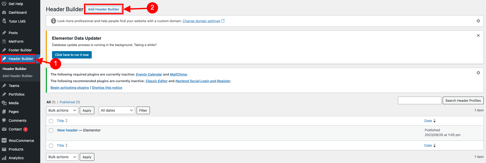
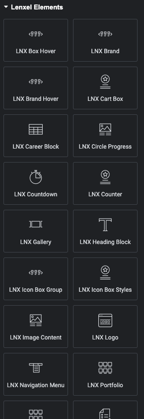

Hi, and welcome to the Lenxel User Guide. Lenxel is a learning management system based on WordPress theme and plugins, it allows learners to easily interact with learning materials and provides adequate follow-up progress on courses.
The User Guide covers all the information needed to use the Lenxel theme to build an amazing Learning management system, as well as some helpful tips and tricks that will make your experience working with the Lenxel theme easier and more enjoyable.
Once you purchase the theme from template monster, you'll be able to download them theme.
- Download All Files and documentation
- Installable Wordpress Theme File
you have to extract out the file downloaded from market place( to get lenxel.zip file ) before installing it to wordpress system.
Install theme via Wordpress Dashboard

- Go to "Appearance > Theme" section
- Click "Add New" and select the "Upload Theme" option
- Click on Choose File and upload lenxel.zip
- All Done :)

Install theme via FTP
- If you would like to install the Lenxel theme via FTP, please follow these steps:
- Extract the lenxel.zip file you previously located. You should now see a folder named lenxel
- Using an FTP client, login to the server where your WordPress website is hosted
- Using an FTP client, navigate to the /wp-content/themes/ directory under your WordPress website’s root directory
- Using an FTP client, upload the previously extracted lenxel folder to the themes directory on your remote server
- Once the installation is complete, your Lenxel theme will be ready for use. Now all you need to do is navigate to Appearance > Themes and activate the Lenxel theme. After you have done this, click on the just activated theme or alternatively Apperance > install plugins to install and activate all the required plugins. After you have done this you should see Theme Setting appear in the left navigation bar of your WordPress admin panel


Menual Import
We have included detailed demo files (.xml, .json, .wie) in the downloaded TemplateMonster file.- Navigate to "Tools" and select "Import."
- If you haven't installed the WordPress Importer, click "Install Now."
- Once installed, click "Run Importer."
- Choose the "lenxel-wordpress.xml" file that you've previously downloaded from the TemplateMonster zip archive located in the "demo" folder.
- Click on "Upload file and import" to initiate the data import process
- Navigate to "LNX Theme Settings" and select "Import/Export."
- Click "Upload file."
- Choose the "lenxel-theme-settings.json" file that you've previously downloaded from the TemplateMonster zip archive located in the "demo" folder.
- Click 'Import' to initiate the data import process
To create child theme
To ensure that you have the necessary customization flexibility and avoid potential copyright issues, it is essential to create a child theme.We have included a child theme for you within the zip file you downloaded from TemplateMonster. All that is required is to upload the 'lenxel-child.zip' file to the 'Appearance > Themes' section and activate it, just as you would with the main theme.
Adding / modify php code
To add and modify PHP code, it is essential to write your PHP code within the child theme's functions.php file. You can use any integrated development environment (IDE) or the WordPress theme file editor. However, be cautious with your code, as it can potentially disrupt the site's functionality.Adding new style / script
To add and modify Style, it is essential to write your styling within the child theme's style.php file. You can use any integrated development environment (IDE) or the WordPress theme file editor.In the general settings, you can do the following:
- Set custom theme color
- Set page layout
- Assign login to any page
- Assign login to the landing page
- Disable WP login
- Choose login template
- Set Google Map API keys
In the dashboard settings, you can do the following:
- Enable or disable announcement
- Enable or disable purchase history
- Enable or disable withdrawals
- Enable or disable header
- Enable or disable registration notification

In the dashboard settings, you can do the following:
In the demo importer settings, you can do the following:
- Choose the default product display layout for WooCommerce shop/category pages.
- Choose a column for small, medium, and larger screen
- Choose Woocommerce Sidebar Config
- Choose Woocommerce on the Left Sidebar
- Choose Woocommerce Right Sidebar
- Enable or Disable the breadcrumb display title page
- Choose breadcrumb padding-top
- Choose breadcrumb padding-bottom
- Choose a breadcrumb overlay background color
- Choose breadcrumb overlay background color opacity
- Enable or Disable breadcrumb overlay background image
- Choose breadcrumb text style
- Choose breadcrumb text-align
In the product settings, you can do the following:
Set the Choose Products per pageIn the course settings, you can do the following:
- Choose filter layout
- Choose a column for extra small, small, medium, and larger screen
- Choose Default Archive Page Page Sidebar Config
- Choose Default Archive Page Page Left Sidebar
- Choose Default Archive Page Page Right Sidebar
- Choose Page title
- Enable/Disable Course Category on Course Page
- Enable/Disable Course View on Course Category/Tag Page
- Breadcrumb Description
In the portfolio settings, you can do the following:
- Choose a column for extra small, small, medium, and larger screen
- Choose Default Archive Page Portfolio Sidebar Config
- Choose Default Archive Page Portfolio Left Sidebar
- Choose Default Archive Page Portfolio Right Sidebar
- Set Blog Excerpt Limit
- Choose a single portfolio layout.
- Choose the default left sidebar for a Single portfolio.
- Choose the default right sidebar for a Single portfolio.
In the page settings, you can do the following:
- Choose the default state for the page heading, shown/hidden.
- Choose the default sidebar config for pages
- Choose the default left sidebar for pages
- Choose the default right sidebar for pages
- Register image
In the blog settings, you can do the following:
- Choose a column for extra small, small, medium, and larger screen
- Choose Default Archive Page Blog Sidebar Config
- Choose Default Archive Page Blog Left Sidebar
- Choose Default Archive Page Blog Right Sidebar
- Set Blog Excerpt Limit
- Choose a single post layout.
- Choose the default left sidebar for Single Post.
- Choose the default right sidebar for Single Post.
In the typography settings, you can do the following:
- Main Font
- Secondary Font
- Header Default Menu Font
In the style settings, you can do the following:
- Choose body color
- Choose link color
- Choose the link hover color
- Choose heading color
- Choose background color
- Upload background image
- Choose background type
- Choose the footer background color
- Choose text color
- Choose the header text color
- Choose the header active link color
- Choose header hover link color
- Choose the header mobile menu text color
- Choose the dashboard sidebar background color
- Choose the dashboard sidebar menu text color
- Choose dashboard Sidebar Hover/Active Background Color
In the breadcrumb settings, you can do the following:
- Enable or Disable the breadcrumb title
- Enable or Disable breadcrumb padding-top
- Enable or Disable breadcrumb padding-bottom
- Enable or Disable breadcrumb overlay background color
- Enable or Disable breadcrumb overlay background color opacity
- Enable or Disable breadcrumb overlay background image
- Upload breadcrumb background image
- Choose breadcrumb text style
- Choose breadcrumb text-align
In the footer settings, you can do the following:
- Choose custom footer
- Enable or Disable the top footer
- Enable or Disable copyright text
- Edit copyright text

Header Style
- Set header
- Upload logo for mobile and desktop
- Set the logo width and top padding for mobile: This allows users to customize their logo size and spacing
- Enable or Disable User: This provides users with the flexibility to hide/show their user profiles in the site header
- Enable or Disable search on the default header: This provides users with the flexibility to hide/show search feature on header
- Enable or Disable the search feature in the default header: This provides users with the flexibility to show or hide the search feature in the header.
Header Style
- Set header
- Upload logo for mobile and desktop
- Set the logo width and top padding for mobile: This allows users to customize their logo size and spacing
- Enable or Disable User: This provides users with the flexibility to hide/show their user profiles in the site header
- Enable or Disable search on the default header: This provides users with the flexibility to hide/show search feature on header
- Enable or Disable the search feature in the default header: This provides users with the flexibility to show or hide the search feature in the header.
Footer copyright
Insert your copyright content here; it will be displayed in the footer section.
Create
To create a new page, go to 'Page' > 'Add New'.Set the page as Homepage
- In the WordPress admin dashboard, go to "Settings" in the left-hand menu.
- Click on "Reading."
- In the dropdown menu labeled "Homepage," select the page you want to set as your homepage.
- You may also have an option for a "Posts page," which is typically used for your blog page. If you want to set a separate page for your blog, select it in the "Posts page" dropdown.
- Click the "Save Changes" button at the bottom of the Reading Settings page.

Create
To create a new course, go to 'Tutor LMS' > 'Courses', Navigate to 'Add New'.Generate a new course with course details
Course Setting with Metabox
Tutor and Lenxel use metaboxes to provide flexibility in course enrollment, including grade calculations for quizzes and course progress tracking.Implementation of a Grading System Prior to Certificate Issuance
if as an instructor certificate is set for quiz. the system checks if the student grade is greater than or equal to the quiz pass mark, if true certicate will be issued to the student. if a certificate is set for a course as an instructor, the system automatically evaluates the student's performance by calculating the average score. This calculation is based on the sum of the scores from all quiz attempts, divided by the total number of quiz attempts. To determine whether a student passes the course and qualifies for a course certificate, the system checks if the student's average grade is greater than or equal to the course's pass mark.Configure The Entire Course as a Monetized Course
To achieve this, you must first install and activate Tutor and WooCommerce. Then, navigate to "Tutor LMS" > "Settings" and click on the "Monetization" tab. Select the appropriate monetization method, and once you've made your selection, click 'Save' to confirm.Sidebar
Sidebars are often populated with widgets. You can manage these widgets in the "Widgets" section of the WordPress admin:- Default Sidebar
- Woocommerce bar
- Woocommerce Single
- Widget off Canvas Mobile
- Blog Sidebar
- Page Sidebar
- Portfolio Sidebar
- Archive Course Sidebar
- Footer Pages Widget Area.
Manage Widget
To update the top footer using widgets, go to 'Appearance > Widgets' and navigate to the Footer Pages Widget Area.Create/Manage Header
This allows you to create and manage multiple dynamic headers for various post types, including pages, posts, courses, team, and portfolio pages. Elementor Integration
Our system has been seamlessly integrated with Elementor to give you full control over your site's layout. This integration enables you to easily add course elements, portfolio elements, and team elements to your pages. e.g LNX Course Category, LNX Continue Learning, LNX Work Process, LNX Locations Map, LNX Course, LNX Course Category, LNX Banner, LNX Course Banner Group, LNX Course Filter Form, LNX Course With Filter, LNX Box Hover, LNX Brand, LNX Brand Hover, LNX Cart Box, LNX Career Block, LNX Circle Progress, LNX Countdown, LNX Counter, LNX Gallery, LNX Heading Block, LNX Icon Box Group, LNX Icon Box Style, LNX Image Content, LNX Logo, LNX Navigation Menu, LNX Portfolio, LNX Post, LNX Pricing Block, LNX Search Box, LNX Services Group, LNX Slider Images, LNX Teams, LNX Testimonials, LNX User, LNX Video Box, LNX Video Carousel, LNX Instructor/Students, LNX Category, LNX Event Create/Update Portfolio
You can customize the design and layout of your portfolio to match your brand or personal style. This allows you to create a unique and tailored showcase.Metabox
It is integrated for versatile data collection within the portfolio builder.Create/Update Team
You can efficiently manage and update team member information, such as names, position, quote, and contact details.Metabox
It is integrated for versatile data collection within the team builder.- Tutor LMS - Elearning and Online Course Solution [Required]
- Lenxel Theme support [Required]
- Meta Box [Required]
- Woocommerce [Required]
- Elementor Page Builder [Required]
- Event Calender
- Mailchimp
- MetForm
- Nextend Social Login and Register